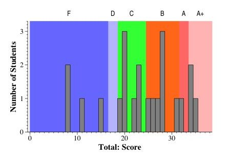
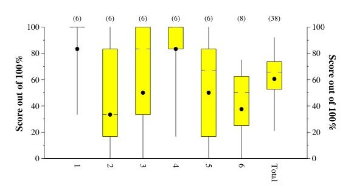

CS140 Midterm Exam -- October 5, 2004
The Exam
Grade Histograms


(This is a Tukey Plot, which has lines to the max and min, yellow box denoting
the 1st and 3rd quartiles, hash marks at the median, and dot at the mean).
Comments
I designed this to be an easy exam. Here is my breakdown of how I expected
points to go on each question:
- Question 1: B: 6 points. A: 6 Points.
- Question 2: B: 3 points. A: 5 Points.
- Question 3: B: 5 points. A: 6 Points.
- Question 4: B: 5 points. A: 6 Points.
- Question 5: B: 3 points. A: 4.5 Points.
- Question 6: B: 3 points. A: 4.5 Points.
That makes 25 for a B, 32 for an A. Here is the breakdown of assigning
letters to grades:
- A+: 34 and above
- A+: 32 to 34
- B: 25 to 32
- C: 19 to 25
- D: 17 to 19
- F: Below 17